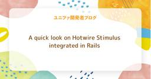

ユニファ開発者ブログ
https://tech.unifa-e.com/
ユニファ株式会社プロダクトデベロップメント本部メンバーによるブログです。
フィード

A quick look on Hotwire Stimulus integrated in Rails
ユニファ開発者ブログ
By Harvey Ico, server-side engineer from Unifa So as I was installing new rails app, I noticed that the default javascript library installed now was Stimulus from Hotwire. I find it really good since your javascript now runs only when the data-controller is defined on your page. This is specially he…
6日前

A Small Dive into Next.js: Modal, DB, and First Impressions
ユニファ開発者ブログ
By Peter, backend engineer at Unifa. As someone who mainly works with Ruby on Rails and Vue.js in my day-to-day projects, I always enjoy exploring new frontend technologies in my spare time. Recently, I decided to give Next.js a try — not just to see what it’s like, but also to connect it to a local…
13日前
記事ページのテンプレート設計で大事にした“更新のしやすさ”と“読みやすさ”
ユニファ開発者ブログ
保育AI事業に注力しているユニファでは、今後AI関連の記事を多数公開していく予定です。 それに先立ち、これから増えていく記事を見やすく・更新しやすく届けられるよう、新たに記事ページ用のテンプレートを設計しました。 今回は、その設計のポイントについてご紹介します。
17日前
Xcode26からのUIテストの改善 - WWDC25新情報
ユニファ開発者ブログ
端的にいうと Apple謹製のUI操作記録が25年秋登場、UIテストの機運が高まります。 1) WWDC25 WWDC25が6月10日(日本時間)から5日にわたって開催されました。昨年WWDC24ではApple Intelligenceを銘打ってコンシューマーに向けに機械学習モデルをアピールするも実現できた機能は限られ、出てきたものはAIで先行する他社サービスをアレンジしたものか、パートナーとなったChatGPTの橋渡し程度のものでした。昨年のAppleの施作は継続するとして今年は開発者向けの機械学習モデルによる開発効率の向上が図られています。 本題から逸れますがAppleはXcode26で開…
1ヶ月前
乳幼児の安心を支える挑戦：PMが挑んだ新型午睡センサー開発記
ユニファ開発者ブログ
乳幼児の安心を支える挑戦：PMが挑んだ新型午睡センサー開発記 こんにちは。ユニファでプロダクトマネージャーをしております、かじわらです。ユニファはこれまで、保育現場の安心・安全を支えるIoTデバイスとして「午睡センサー」を提供してきました。午睡センサーの新型機は、2025年6月から運用が始まり、実際に保育の現場でご利用いただいています。今回は、プロダクトマネージャーとして携わった新型機の開発についてまとめたいと思います。
1ヶ月前
なぜユニファではエンジニア以外にも AI コードエディタを配るのか？
ユニファ開発者ブログ
こんにちは。ユニファの VPoE をしております、柿本です。 皆さんは開発に AI コードエディタを活用していますか？ 先日は Cursor 1.0 がリリースされ、その少し前に GitHub Copilot の Agent モードが GA するなど、毎月のようにワクワクが飛び出してきます！ さて、タイトルの通り、ユニファでは開発組織全体で AI コードエディタの導入を進めています！ これは単に新しいツールを使って業務効率化しようという話ではありません。 エンジニアだけでなく、PdM、QA、デザイナーを含む全ての開発メンバーが AI を使いこなすことで、 より価値の高い機能を、より早く提供でき…
2ヶ月前
LangfuseでマルチモーダルLLMアプリのトレーシングを行う際に工夫したこと
ユニファ開発者ブログ
こんにちは。R&Dを担当している浅野です。 ユニファではマルチモーダルLLMを活用したアプリ開発を積極的に行っています。LLMを一度callして終わりではなく、複数のステップを直列や並列で組み合わせて処理を行う場合や、LLMに処理ステップから考えさせる場合は、最終のアウトプットだけでなく中間ステップの内容を確認することが重要です。通常のWebアプリ用のロギングツールを使ってそれを行うことも可能ですが、LLMアプリに特化したサービスを使うと、LLM callのLatency、消費トークン、コストなども把握できますし、プロンプト管理や評価機能がついているものもあり、かなり便利です。 私たちのチーム…
2ヶ月前
一人歩きしても伝わるデザインデータ
ユニファ開発者ブログ
こんにちは、ユニファでプロダクトデザイナーをしている砂田です。 この記事では、私が日々の業務の中で心がけている「一人歩きしても伝わるデザインデータの作り方」について紹介します。 プロダクト開発は、PdM・エンジニア・デザイナーだけでなく、ビジネスサイドのCSや営業の方など、様々な部署のメンバーと連携しながら進んでいきます。 その中で、誰が見てもわかりやすいデザインデータにすることを常に意識しています。
2ヶ月前
中途入社デザイナー向けのオンボーディングの取り組み
ユニファ開発者ブログ
ルクミーのプロダクトデザインを担当しているようがいです。 新しい仲間を迎え入れる際、チームへスムーズに馴染み、早期に力を発揮してもらうためにオンボーディングを実施している方も多いのではないでしょうか。 モチベーション高く入社してくる新メンバーをお迎えする側として、オンボーディングやオリエンテーションは大切にしたいと思っています。それが組織全体の活性化・良いプロダクト作りにも繋がると信じています。 昨年、ユニファには2名のプロダクトデザイナーが入社しました。 その際に実施したオンボーディングプログラムについて、考え方や具体的な内容、工夫した点などをご紹介します。事業会社へ中途入社するインハウスデ…
2ヶ月前
ユニファ株式会社はRubyKaigi 2025でPlatinum Sponsorとしてブース出展しました。
ユニファ開発者ブログ
こんにちは、ユニファでサーバーサイドエンジニアをしている小川です。 2025年4月16日から4月18日まで開催された「RubyKaigi 2025」にPlatinum Sponsorとしてブースを出展したので、当日の様子などを振り返りたいと思います。 ユニファとしては初めてのRubyKaigiへのブース出展となります。 会場 出展内容 最後に
3ヶ月前
進め！テスト自動化！ 〜自動テスト導入、奮闘記！〜
ユニファ開発者ブログ
「私は思考する、故に、私は存在する」 Rene Descartes：方法叙説（講談社学術文庫 小泉義之 訳） より /* BoxDesign */ .nomadBox7 { padding: 1.5em; margin: 15px 0; color: #323232; border-top: 5px solid #55A8AC; box-shadow: 1px 1px 2px rgba(0,0,0,.3);/*影*/ } .nomadBox7 p { padding: 0; margin: 0; } /* CSS end */ はじめに 始まりは「ある危機感」から ツールの選定とROI試算 "…
3ヶ月前
WAKE Careerさんにインタビューしていただきました！
ユニファ開発者ブログ
こんにちは、ユニファでAndroidエンジニアをしている、あいばです。 先日、女性のためのITキャリア転職サービス「WAKE Career」さんからお声がけいただき、インタビューを受けました。 自分のキャリアを振り返るのは少し照れくささもありましたが、新卒の頃のことや、うまくいかなかった時期のことをあらためて言葉にすることで、あの頃の自分の頑張りを認めてあげられた気がします。 もし今、キャリアに悩んでいたり、自分に自信が持てなかったりする方がいたら、「こんなやつでもなんとかやってるんだな」と、気楽な気持ちで読んでもらえたら嬉しいです。
3ヶ月前
ドキュメント作成が苦手なエンジニア！集まれ！
ユニファ開発者ブログ
初めに ユニファでバックエンドエンジニアをしている八木です。ドキュメント作成、エンジニアでは苦手意識のある人も多いのではないでしょうか。日常的に仕様書などを書く機会があれば練習になっていいのですが、そうでない場合や、初めて仕様書や手順書を書く場合など、戸惑いながら真っ白な画面を見続けている人もいるのではないでしょうか。 本記事はエンジニアのみなさんの中でのドキュメント作成への苦手意識を少しでも減らしていけたらいいなと思っています。初めてドキュメント作成をするような初級者向けの内容です。ドキュメントの骨組み作成までの道筋を記載しています。
4ヶ月前
ユニファ開発者ブログを「フリーランスHub」でご紹介いただきました！
ユニファ開発者ブログ
こんにちは。ユニファ開発本部長のやまぐち(@hiro93n)です。 レバレジーズ株式会社の運営する「フリーランスHub」にて当ブログをご紹介いただきました。 freelance-hub.jp 【フリーランスHubトップページ】https://freelance-hub.jp/ 【フリーランスHub案件一覧ページ】https://freelance-hub.jp/project/ この機会にご覧いただけますと幸いです！ <求人コーナー> ユニファの開発チームでのプロダクト開発にご興味を持って頂けましたら、ぜひ募集要項をご覧ください！ jobs.unifa-e.com
4ヶ月前
画像におけるマルチモーダルLLM活用
ユニファ開発者ブログ
こんにちは、ユニファで機械学習エンジニアをしている藤塚です。 昨今の生成AIの進展が目まぐるしいですが、ユニファでも例にもれず生成AI活用が進んでいます。特に、保育園で日々撮影される写真データの活用は主要テーマの1つであり、写真データにおける生成AI活用の検討が進められています。 従来の機械学習モデルと比較すると、LLM（Large Language Model）という名前の通りすでに大規模データを事前に学習していることからチューニングがなくとも十分な性能のモデルとして利用できる場合も多く（また今後の性能向上も十分期待できる）、専用のタスクに特化した大量のデータの用意から、モデルを学習するため…
4ヶ月前
Using OpenSearch with Ruby on Rails
ユニファ開発者ブログ
By Patryk Antkiewicz, backend engineer at Unifa. In one of Unifa products we provide the functionality called Letter, which, as the name suggests, is a kind of message sent from nursery school to parents of all kids belonging to specific classes. It became necessary to implement a search feature for…
4ヶ月前
品質保証の"お作法" 〜テストプロセス解体新書〜
ユニファ開発者ブログ
「語り得ぬものについては、沈黙せねばならない」 Ludwig Josef Johann Wittgenstein：論理哲学論考 より /* BoxDesign */ .nomadBox7 { padding: 1.5em; margin: 15px 0; color: #323232; border-top: 5px solid #55A8DC; box-shadow: 1px 1px 2px rgba(0,0,0,.3);/*影*/ } .nomadBox7 p { padding: 0; margin: 0; } /* CSS end */ はじめに おことわり （再掲）品質を語るには、「…
4ヶ月前
PdM Days 2025 軌跡から、つむぐ。参加レポート
ユニファ開発者ブログ
こんにちは、ユニファでプロダクトマネージャーをしているたしろ（@tsrs88）です。 2025年3月15日に開催されたPdM Days 2025のDay4に現地で参加させていただきました。 PdM Daysは昨年に続き、2回目の開催です。 pdmdays.recruit-productdesign.jp セッションやOST（参加者同士のディスカッション）を通じて、多くの学びを得ることができました。この記事では参加レポートとして感想や学びを書きたいと思います。
4ヶ月前
ユニファ開発者ブログを「レバテック フリーランス」でご紹介いただきました！
ユニファ開発者ブログ
こんにちは。ユニファ開発本部長のやまぐち(@hiro93n)です。 レバテック株式会社の運営する「レバテック フリーランス」にて当ブログをご紹介いただきました。 freelance.levtech.jp この機会にご覧いただけますと幸いです！ <求人コーナー> ユニファの開発チームでのプロダクト開発にご興味を持って頂けましたら、ぜひ募集要項をご覧ください！ jobs.unifa-e.com
4ヶ月前
第 3 回 生成 AI Innovation Awards に登壇しました！
ユニファ開発者ブログ
こんにちは。VPoE の柿本です。 以下の記事でご報告しました「生成 AI Innovation Awards」のピッチコンテストに登壇してきました！ tech.unifa-e.com ピッチコンテストは GOOGLE CLOUD 主催の「AI Agent Summit ’25 Spring」のセッションの一つとして行われました。 ユニファの生成 AI への取り組みについて 5 分間のプレゼンを行い、業界の最前線で活躍する審査員の方々に評価をいただく貴重な機会となりました。
4ヶ月前
UIUX Camp! 2025 参加レポート
ユニファ開発者ブログ
デザイン課のなかとみです。 2025年3月1日に開催されました UIUX Camp!2025 に参加しました。 cp.nijibox.jp 講演1：UXのこれまで、現在、そしてこれから ヤコブ・ニールセン氏
5ヶ月前
ユニファPdMが選ぶ！印象に残るリリース 2024年度編
ユニファ開発者ブログ
こんにちは、ユニファでプロダクトマネージャー（以下、PdM）をしている、たしろです。 PdM Days Day4に参加することが決まりました。（倍率高かったみたい）他社のPdMの方とお話しできる機会を楽しみにしています。 最近、PdMに関する採用ページの作成準備を進めていて、「ユニファのルクミーというプロダクトがどんなものを作っているのか？」についてあまり情報がないな、と感じました。 保育領域のプロダクトでもあるので、別の業界の方からは課題が見えにくかったり、具体的な機能が何を解決しているか、も想像がしにくいだろうな、と。 そこで、今回はユニファのPdMメンバーに「2024年度で印象に残るリリ…
5ヶ月前
TokyoWomen.rb #1 に参加＆登壇しました
ユニファ開発者ブログ
サーバーサイドエンジニアの船曵です。 2025/3/1にTokyoWomen.rb開催されました。 tokyowomenrb.connpass.com rubyコミュニティに参加してみたいという思いはありつつも、 なかなか一歩踏み出せずにいたのですが、今回、初めての登壇という形で参加することができました。
5ヶ月前
ユニファと共に進む、品質保証の旅 〜ユニファQAの姿を考察してみた〜
ユニファ開発者ブログ
「品質は、誰かにとっての価値である」 Gerald Marvin Weinberg：ソフトウェア文化を創る1 ワインバーグのシステム思考法 より /* BoxDesign */ .nomadBox7 { padding: 1.5em; margin: 15px 0; color: #323232; border-top: 5px solid #55A8DC; box-shadow: 1px 1px 2px rgba(0,0,0,.3);/*影*/ } .nomadBox7 p { padding: 0; margin: 0; } /* CSS end */ はじめに おことわり 品質を語るには…
5ヶ月前
ユニファの保育AIがGoogleの生成 AI Innovation Awardsでファイナリストに選出されました！
ユニファ開発者ブログ
こんにちは。ユニファAI開発推進部の田渕です。 周囲で花粉の被害が聞かれるようになった昨今、みなさまいかがお過ごしでしょうか。幸い、私は花粉症ではないのですが、いつか来るかもしれないとビクビクしながら生活しています。 そんなタイミングで素敵なニュースが飛び込んできました。 1. はじめに ご存知の通り、弊社は、保育者の業務負担を軽減し子どもと向き合う時間を増やすことを目的に、保育総合ICTサービス「ルクミー」を提供しています。この度、Google Cloud Japan主催の「第3回 生成 AI Innovation Awards」において、ルクミーの保育AIサービスがファイナリストに選出され…
5ヶ月前
Shoryukenからaws-activejob-sqs-rubyへの移行を検討してみる
ユニファ開発者ブログ
こんにちは、サーバーサイドエンジニアの本間です。 弊社ではSQSをジョブキューとして使い、バックグラウンドジョブを処理させているサービスがそれなりにあります。 その際、 shoryuken を使うことで、自分たちで実装する工数をなるべく少なくしています。 過去にこのgemを使ったエントリも何個か投稿しています。 tech.unifa-e.com tech.unifa-e.com 安定して動作もしており、大変お世話になっているgemなのですが、一時期このgemのGithubリポジトリがアーカイブ状態になっており、今後のメンテナンスやセキュリティアップデートが難しい状況になっていました。 あら、s…
5ヶ月前
入社３ヶ月目のPdMがユニファで働く実感について
ユニファ開発者ブログ
こんにちは！プロダクトマネージャーのさいとうです。 私が所属するPdM一課では入社3ヶ月目にブログを書くという慣例があるようで、私が入社前にチェックした記事のいくつかは先輩PdMの入社3ヶ月目記事でした。今改めて読んでみると、書かれている内容は本当にその通りだったな〜と実感しています。 この記事では私がユニファに入って感じた良さ、マルチプロダクトの開発環境を体験して感じたギャップ、インパクトスタートアップの開発組織って実際どうなんだろう？と入社前に持っていた疑問の答え合わせなどをお届けします。
6ヶ月前
ママエンジニア、新世界ユニファに挑む〜子育てもキャリアも最強に〜
ユニファ開発者ブログ
こんにちは。今年1月1日に入社したプロダクトデベロップメント本部開発二部SW5課のサーバーサイドエンジニアのおうまえです。 ユニファに入社してあっという間に三週間が経ちました。最初は結構不安だったけど、今はすっかり解消され、これから会社やチームに何をコミットできるか毎日ワクワクしています。 本記事では、二人の子供を育てているママエンジニアの視点から、ユニファに入社して3週間で感じた会社の暖かさについて書いてみたいと思います。 ママエンジニア、新世界ユニファに挑む〜子育てもキャリアも最強に〜
6ヶ月前
未知との遭遇が楽しい理由：AIと歩むエンジニアの冒険
ユニファ開発者ブログ
みなさん、こんにちは。 ユニファでエンジニアのマネージャーをしている田渕です。 2025年になりましたね。新しい年を迎えるにあたり、新たなスタートを迎えたり、目標を立てたりしている方も多いのではないでしょうか？ ユニファでは昨年のアドベントカレンダーで初めて、開発関連部署以外の方々にも登場していただきました。 今日は、最終日に登場した土岐さんのブログを引用しつつ、「なぜ私がAIをこんなに楽しみにしているのか」に気づいた話をしていきたいと思います。
7ヶ月前
やっぱりサンタクロースがいる世界の方が、素敵ではないだろうか
ユニファ開発者ブログ
この記事は、ユニファAdvent Calendar 2024の25日目の記事です。 adventar.org 生まれて初めてのアドベントカレンダー ルクミーを運営するユニファ代表の土岐です。生まれて初めてアドベントカレンダーに投稿するので、やや緊張していますが、人生初という体験は、いつもワクワクするので張り切っていきます。 アドベントカレンダーは、クリスマスまでの日々を楽しむためのカウントダウンです。このブログの投稿日がクリスマスでもあるため、クリスマスに関連する話題を考えてみました。
7ヶ月前